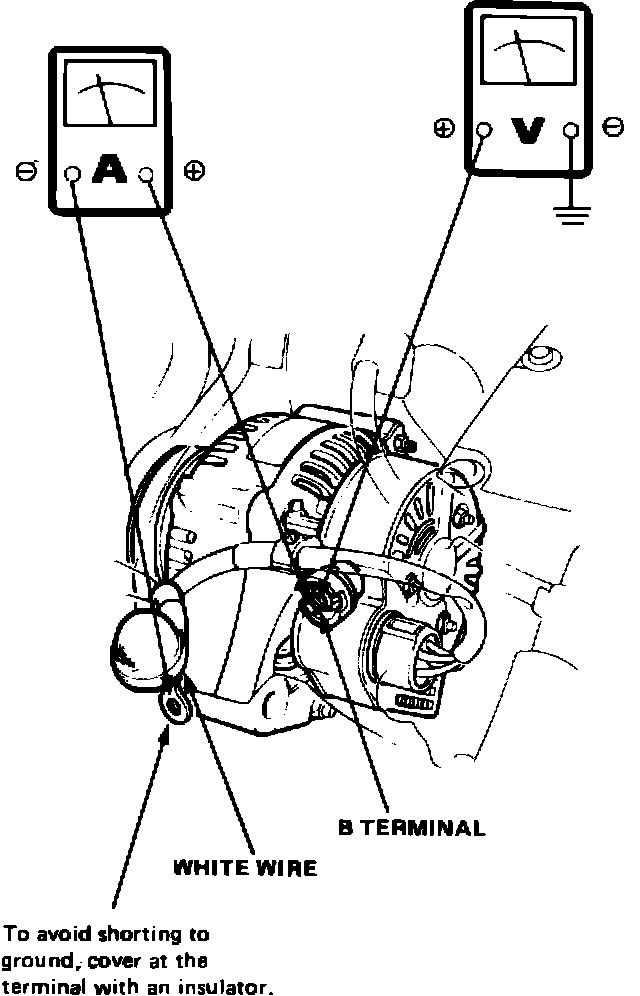
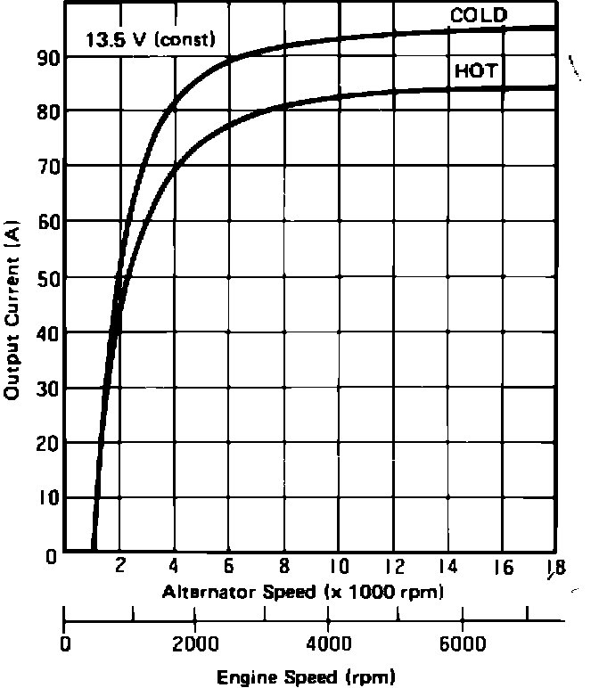
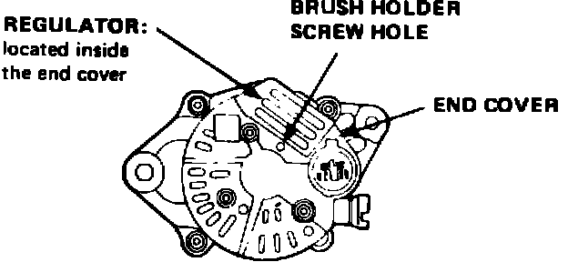

Alternator: Testing and Inspection
1986-87
1. Ensure battery is fully charged and that alternator belt, connections at alternator and main fuses are in satisfactory condition.
2. On Integra models, ensure fuse No. 4 in the dash fuse panel is in satisfactory condition.
3. On Legend models, ensure fuse No. 11 in the dash fuse panel and No. 36 in the underhood relay box are in satisfactory condition.
4. On all models, disconnect electrical connector from alternator.
5. Turn ignition switch on and ensure battery voltage exists between alternator connector black/yellow wire terminal and ground and, on Legend models, between yellow/blue wire terminal and ground.
Fig. 1 Alternator test connections. 1986-87:

6. If voltage is indicated as described in step 5, connect a voltmeter and ammeter to alternator as shown, Fig. 1.
7. Start engine, turn on headlamps and rear defroster and set blower fan on high speed.
Fig. 3 Alternator test specifications. Legend:

8. Observe amperage and voltage output and compare to specifications, Fig. 3. If voltage remains above 13.5 volts, apply a greater electrical load to lower voltage. If voltage remains above 16 volts, stop engine and replace voltage regulator.
9. Turn off all electrical loads and check output voltage at 1500 RPM. If voltage indication is still 13.9-15.1 volts, the alternator and regulator are operating normally. If charge warning lamp remains lit, refer to ``Charge Warning Lamp Test.''
Fig. 4 Grounding brush holder screw to test alternator output. 1986-87:

10. Insert a screwdriver into brush holder screw hole in alternator and cover, Fig. 4.
11. While contacting the brush screw, ground screwdriver against cover and note amperage reading at various speeds. Ground screwdriver for as short a time as possible. Do not allow system voltage to exceed 16 volts, as electrical system components may be damaged.
Fig. 3 Alternator test specifications. Legend:
12. Compare current output with specifications, Fig. 3, noting the following:
a. If output is not within specifications and, on Integra models, battery voltage is available at alternator black/yellow wire terminal, alternator is defective.
b. If output is within specifications and, on Integra models, battery voltage is available at alternator black/yellow wire terminal, voltage regulator is defective.